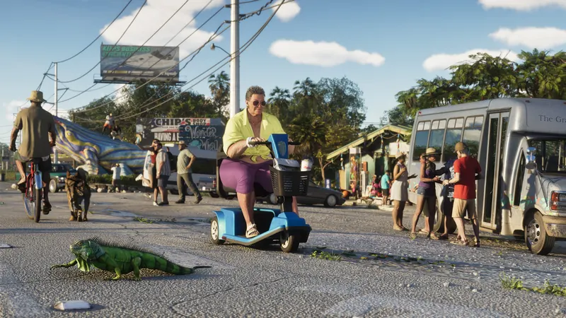

¿Quién es Mandy en GTA 6? ¿Se puede ligar con ella?
Respuesta corta
Mandy es una de las inquilinas de Brian Heder en Key Lento: Jason la conoce en «Pipework», una misión del Capítulo 1 en la que va a cobrarle el alquiler. Coquetea con Jason, pero no se puede tener una relación con ella. La interpreta Lexie Shoaibi.

Quién es
Es una de las inquilinas de Brian Heder en Key Lento, en los Leonida Keys. Jason la conoce en «Pipework», una misión del Capítulo 1 en la que Brian le manda cobrar alquileres atrasados y acaba arreglándole las tuberías, según GTABase y GameSpot. En los créditos oficiales la interpreta Lexie Shoaibi.
¿Se puede tener una relación con ella?
No. Según GameSpot, Mandy flirtea con Jason durante toda la misión, pero el diálogo nunca permite llevar la conversación hacia lo romántico y, al final, Jason se va sin que el jugador pueda decidir otra cosa. Puedes volver a pasar por su casa más adelante y retomar la situación, pero eso no la convierte en una opción romántica.
La única relación del juego es la de Jason y Lucia, y Rockstar ha dicho que es opcional: si quieres que funcione, tienes que cuidarla. Más en finales y decisiones.
¿Es una asesina en serie?
Es una teoría de los jugadores, que se fijan en objetos de su casa y de su coche. No está confirmada. GameSpot menciona que en la misión Jason saca de las tuberías un objeto «curioso», pero no hay más.
Fuentes
- GameSpot: ¿se puede tener una relación con Mandy en GTA 6? (18-11-2026)
- GTABase: lista de misiones (Pipework)
- Rockstar Games: créditos oficiales de GTA VI
- TechRadar: Rockstar dice que la relación de Jason y Lucia es opcional
- Beebom: la teoría de que Mandy es una asesina
Resumen redactado por 6 Estrellas a partir de las fuentes citadas, revisadas el 20 de noviembre de 2026. Si ves un error, cuéntanoslo desde Quiénes somos.